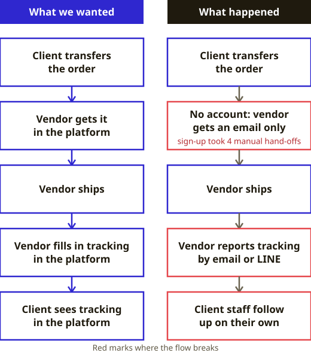
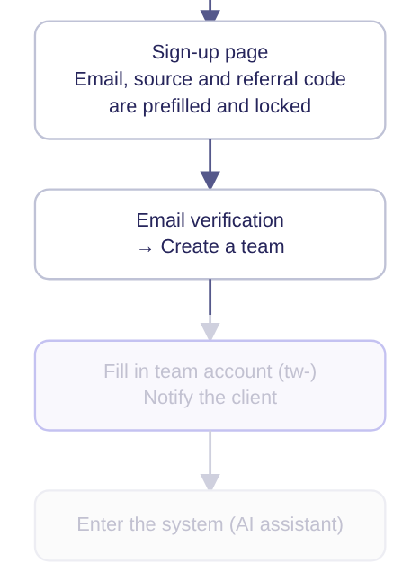
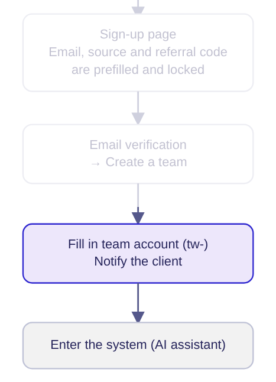
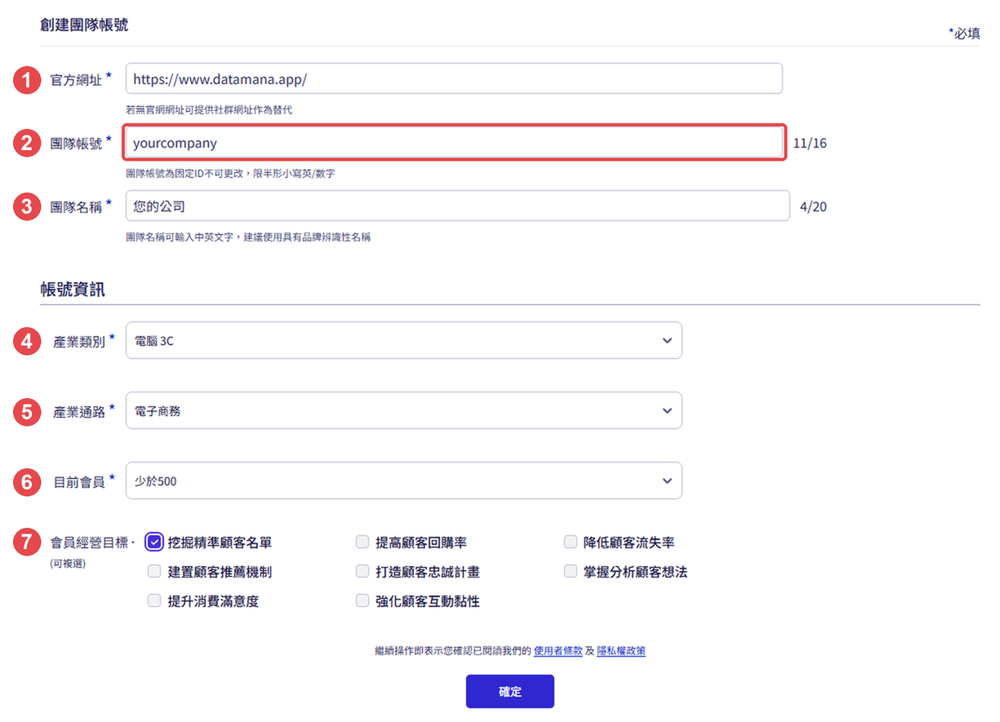

The platform
- Our order management platform helps our clients manage orders from all their sales channels in one place.
- It reads PDF and Excel orders automatically, so staff do not key them in by hand.
- Some orders are shipped by a vendor, a supplier who sends the goods straight to the client's customer.
- The client transfers such an order to the vendor in one click, and the vendor gets an email.
Problem
Vendors rarely sign up to our platform, because signing up is inconvenient.
- A vendor without an account can only reply by email.
- There is no fixed way to report tracking after shipping, so our client's operations staff chase it by email or LINE.
- Signing up meant four manual hand-offs between the client, our team and the vendor (see Before below).
- Operations told us vendors often say it is too much trouble and ask to keep using email.
Evidence: interviews with operations staff at our client, and my own walkthrough of their process. What vendors think comes second-hand from the staff. There was no formal user testing.

Before and after
Before

Before 9 steps, 4 manual hand-offs
- ClientCreate the vendor record (email required)
- Platform teamClient asks the team for a sign-up URL
- ClientForward the URL to the vendor
- VendorRegister and create a team
- VendorGet the team account (tw- prefix) and send it back by email or LINE
- ClientType the vendor's team account in
- ClientTransfer the order
- SystemSend the transfer email and a system notice
- VendorLog in, find the order, ship, add tracking
Manual hand-off
After, and what I designed
The ochre tags D1 to D4 mark where each design point sits in the flow. Select one to see it.

The transfer email carries a one-time link
- What: a link tied to that client and that vendor, much like a promo code.
- Why: the client no longer asks our team for a sign-up URL and forwards it, and the system knows who the link belongs to.

The sign-up page looks the usual way, with the key fields locked
- What: email, referral source and referral code are prefilled and cannot be edited. Then email verification, then the vendor creates a team.
- Why: forwarding the link to someone else cannot bind the wrong person, and the vendor has less to type.

The system fills in the team account and tells the client
- What: when the vendor creates a team, the team account goes into the client's vendor record and the client is notified.
- Why: nobody sends the account back by email or LINE, and nobody types it in. That removes two manual hand-offs.

A vendor who already has an account logs in and lands on the order
- What: if the account is not linked yet, a confirmation screen asks first. Confirm gives the account to the client. Cancel does nothing, and the link stays valid.
- Why: linking needs the vendor's consent, and login comes first, so holding the link alone is not enough.
| Counted from the diagrams | Before | After |
|---|---|---|
| Manual hand-offs | 4 | 0 |
| Steps | 9 | 6 |
| Hand-offs between roles | 6 | 4, all through the system |
These numbers come from the diagrams. They are not measured results, because the feature did not launch.
What happens when a vendor clicks the link
One link. The vendor's state decides where it leads.
A new vendor, no account
- Clicks the link
- Sign-up pageemail, source and code locked
- Email verification, create a team
- Team account filled into the client's recordclient notified
A vendor with an account that is not linked yet
- Clicks the link
- Logs in
- Confirmation screenConfirm or Cancel
- On Confirm, the account is filled inclient notified. Cancel does nothing.
A vendor whose account is already linked
- Clicks the link
- Logs in
- The order opensits number is in the search box
- Logged in with a different email counts as logged out. The platform allows one session, so the other account is signed out.
- The match is by email only, not by team. Orders transferred before the vendor registered are not sent again.
See every branch in the full flow chart

Design decisions
| Decision | Why |
|---|---|
| Fill in, do not create | The client has already created the vendor record and entered its email. Only the team account is missing, so the link fills that gap. |
| Bind by code, not by email | A vendor may use a different email. The link carries a code for this client and vendor. The sign-up page locks the email and requires verification, so forwarding the link cannot bind the wrong person. |
| Log in before binding | My first screen showed the team account and a Confirm button before login, so anyone with the link could bind it. I changed it so login comes first. |
| Handle old links | Links in older transfer emails stay clickable, so they need an expired page with a next step. |
| No back-fill for orders already sent | Those orders were already sent by email. Transferring them again would create duplicates, so the requirements say so, to keep it from looking like a bug. |
Onboarding guide for vendors
- I also wrote an eight-step onboarding guide, from sign-up to filling in tracking.
- These are the main changes I made to it.
| Problem | Change |
|---|---|
| Seven callouts on one screenshot | Kept one red box on the team account, the only place a reader could go wrong. Callouts mark mistakes and order, not every field. |
| Vendors could leave out the tw- prefix | Step 2 warns about the tw- prefix and step 4 stresses the full account. |
| What to send the client was in the last step | Moved it into a warning box at the top, with how to find the account. |
| Text said tracking syncs on its own | The real screen needs Save. Corrected it and added a warning. |


The guide leaves out email verification, which the newer requirements added. It needs a check against the live flow.
Outcome
- The feature was postponed because the login flow was complex. My manager took it over before launch.
- Left open for the product manager: a vendor with an account but no team, a login email that does not match, and one email with several teams.
- Next time I would talk to the engineers about login limits before fixing the scope.
Screens and account names are example data. Numbers come from process diagrams and were not measured.